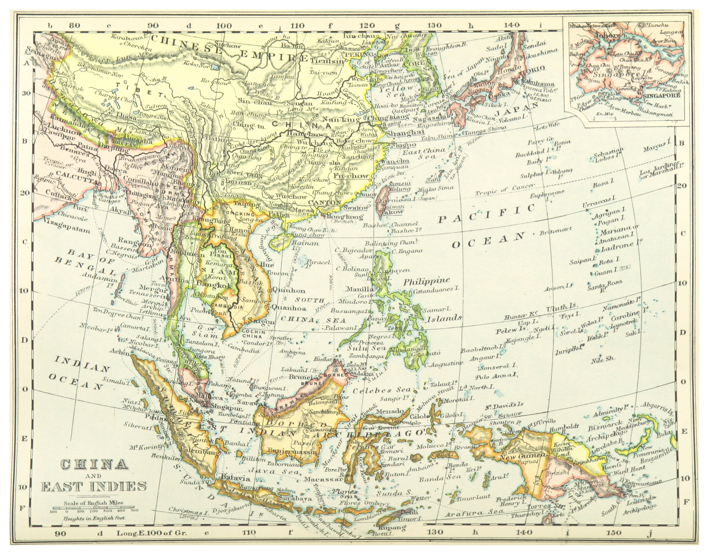

(1899) MAP OF CHINA AND EAST INDIES
崔至延
Scholar of East Asian classical literature and digital humanities, bridging traditional philology and computational inquiry across Korea, China, Japan, and Taiwan.
Scholar of East Asian classical literature and digital humanities, with cross-regional research experience across Korea, China, Japan, and Taiwan. Specializing in comparative textual analysis, digital methodologies for humanities research, and digital humanities education — grounded in qualitative literary analysis and enriched by computational tools including AI/LLM applications.
I completed my Ph.D. in Chinese Ancient Classics at Beijing Normal University (2020), following MA training at the same institution. My academic trajectory spans undergraduate study in Korea, specialist research in Japan during my doctoral years, and postdoctoral work at Academia Sinica in Taiwan — giving me a lived, cross-cultural perspective that informs both my research and teaching.
Currently, I serve as Research Professor and Principal Investigator of an NRF-funded project at Dankook University's Institute for Han-character Education Research.
An interdisciplinary project digitally reconstructing literary space-time through cross-cultural textual analysis.
PI — NRF Academic Research Professor Grant (Jun 2025 – May 2030)
Constructing a parallel reading database of the Veritable Records of the Ming Dynasty and the Annals of the Joseon Dynasty using GraphRAG and text alignment models. Accepted for DH2026.
Academia Sinica, Taipei (Jan–Dec 2025)
Applying digital methods to identify distinctive evolutionary patterns in Korean sinograph orthography that diverge meaningfully from developments in China, Japan, and Taiwan.
Dankook University IHER
"From Digital Archives to Digital Humanities: Centering on the Case of Taiwan" (Forthcoming)
Dankook University · 단국대학교
2022 – 2024, Dept. of Sino-Korean Education
Myongji University · 명지대학교
2021 – 2022, Dept. of Chinese Language & Literature
Beijing Language & Culture University
2017, BLCU · 北京語言大學
Selected Workshops & Seminars
2024 – 2026